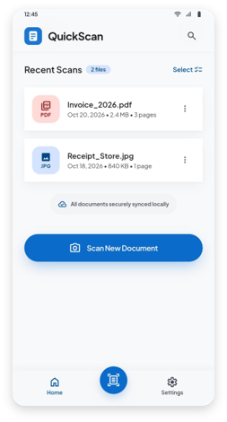
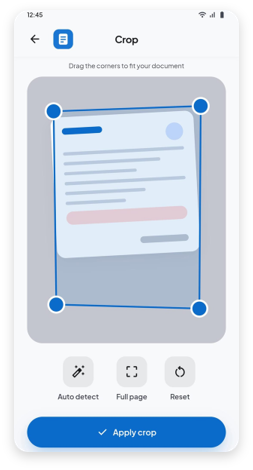
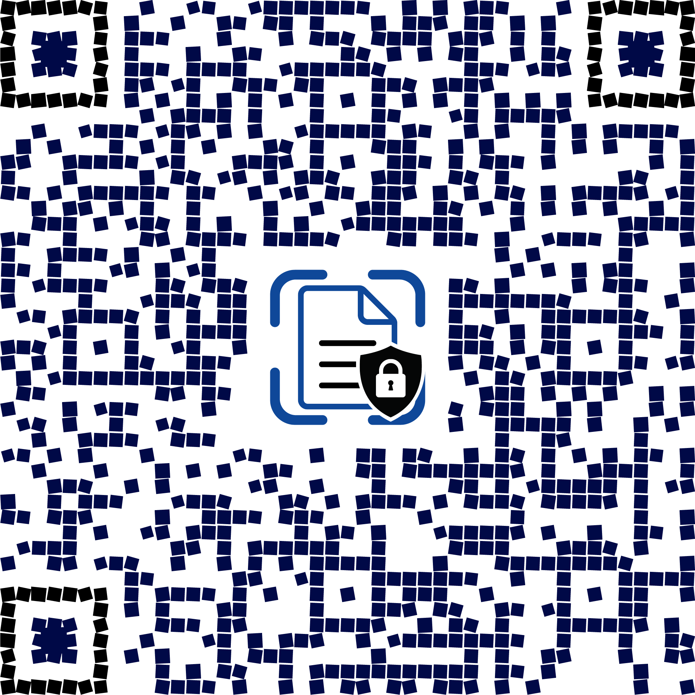

Bir fotoğrafı
belgeye dönüştürmek.
Scan App, belge yakalama ve düzenleme deneyimini telefonun üzerinde tutmayı hedefleyen Flutter projesi. Bu sayfada fikirden ilk prototipe uzanan tasarım ve mühendislik kararlarımızı paylaşıyoruz.
Kağıttan ekrana, tek bir akış.
Belgeyi kamerayla almak yalnızca ilk adım. Scan App'in hedefi; fotoğrafı kırpmak, okunabilirliğini artırmak, PDF biçimine dönüştürmek ve kullanıcıya tekrar erişebileceği düzenli bir arşiv sunmak.
Önceliğimiz: Veriyi cihazda işlemek, kullanıcının kontrolünü korumak ve her geliştirme adımını açık bir teknik yaklaşımla ele almak.
İlk yedi haftanın hikâyesi
Proje fikri, tasarım kararları ve Flutter geliştirmeleri. Her yazı kendi temasını ayrıntılı ele alıyor.
Bir belgeyi fotoğraflamak neden onu taramak değildir?
Bir masa üzerinde çekilen sıradan fotoğrafı, düzenlenebilir ve arşivlenebilir bir belgeye dönüştüren deneyim nasıl tasarlanır?
Bir mobil tarayıcının mimarisini nasıl kurguladık?
Kamera, görüntü işleme, PDF üretimi ve yerel dosyalar: Tek ekrana sığan deneyimin arkasında neden ayrı modüller var?
Dokuz ekran.
Tek bir tarama yolculuğu.
Üçüncü haftada kamera, kırpma, PDF oluşturma ve belge yönetimi için dokuz ekran taslağı hazırlandı. Tasarımlar, uygulamanın hedeflenen deneyimini gösteriyor.


Üç uzmanlık, tek ürün.
Arayüz, görüntü işleme ve dosya yönetimi ayrı alanlarda ilerliyor; tasarım ve teknik kararlar ortak bir ürün deneyiminde buluşuyor.
Geliştirmeyi GitHub'dan takip edin.
Kaynak kod, 12 haftalık iş planı, ilerleme raporları ve arayüz tasarımları tek depoda tutuluyor.
Repository'yi ziyaret et ↗
GitHub bağlantısını açmak için tarayın